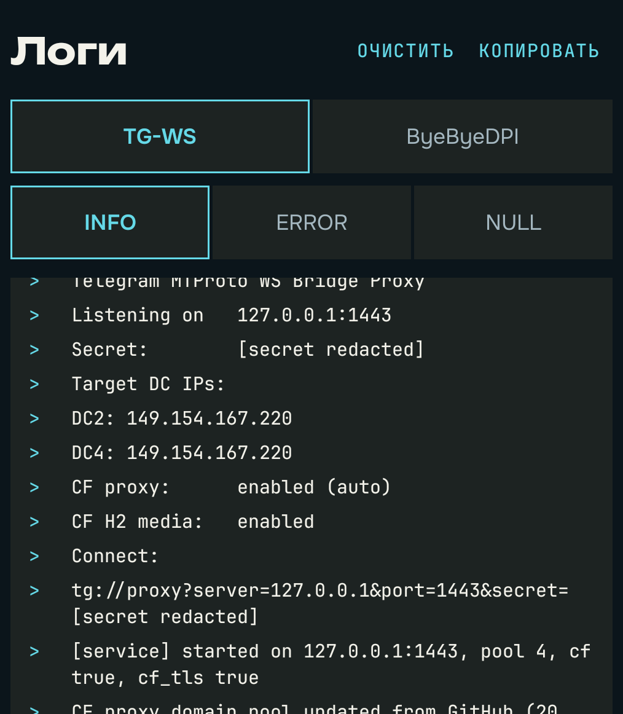

ByeBye TGWS Proxy
Диагностика
Журнал двух
модулей
Выбери TG-WS или ByeByeDPI и уровень журнала. Записи можно скопировать из приложения.

Диагностика
Выбери TG-WS или ByeByeDPI и уровень журнала. Записи можно скопировать из приложения.
